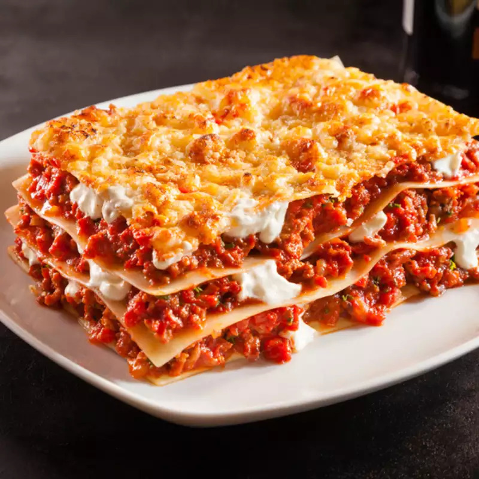

Lasagna

Recipe description
This is the worlds best lasagna (not really tho, my mom's is the best).
The nutrition facts, per serving are:
448 calories; protein 29.7g; carbohydrates 36.5g; fat 21.3g; cholesterol 81.8mg; sodium 1400.4mg.
Ingredients
- 1 pound sweet Italian sausage
- ¾ pound lean ground beef
- ½ cup minced onion
- 2 cloves garlic, crushed
- 1 (28 ounce) can crushed tomatoes
- 2 (6 ounce) cans tomato paste
- 2 (6.5 ounce) cans canned tomato sauce
- etc...
Directions
- Step 1: In a Dutch oven, cook sausage, ground beef, onion, and garlic over medium heat
until well browned.
Stir in
crushed tomatoes, tomato paste, tomato sauce, and water. Season with sugar, basil, fennel seeds, Italian
seasoning, 1 teaspoon salt, pepper, and 2 tablespoons parsley. Simmer, covered, for about 1 1/2 hours,
stirring
occasionally.
- Step 2: Bring a large pot of lightly salted water to a boil. Cook lasagna noodles in
boiling water for 8 to
10 minutes.
Drain noodles, and rinse with cold water. In a mixing bowl, combine ricotta cheese with egg, remaining
parsley,
and 1/2 teaspoon salt.
- Step 3: Preheat oven to 375 degrees F (190 degrees C).
- Step 4: To assemble, spread 1 1/2 cups of meat sauce in the bottom of a 9x13-inch baking
dish. Arrange 6
noodles
lengthwise over meat sauce. Spread with one half of the ricotta cheese mixture. Top with a third of
mozzarella
cheese slices. Spoon 1 1/2 cups meat sauce over mozzarella, and sprinkle with 1/4 cup Parmesan cheese.
Repeat
layers, and top with remaining mozzarella and Parmesan cheese. Cover with foil: to prevent sticking, either
spray foil with cooking spray, or make sure the foil does not touch the cheese.
- Step 5: Bake in preheated oven for 25 minutes. Remove foil, and bake an additional 25
minutes. Cool for 15
minutes before
serving.